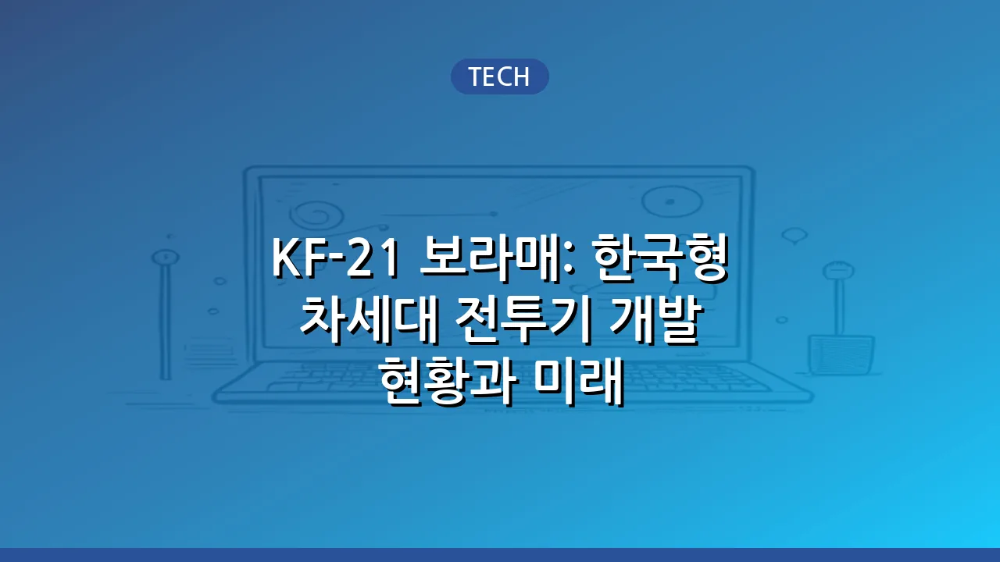

KF-21 보라매: 한국형 차세대 전투기 개발 현황과 미래
하늘을 수호하는 우리의 손으로 만든 전투기, 상상해보셨나요? 대한민국 국방의 미래를 책임질 핵심 전력, 바로 KF-21 보라매입니다. 단순한 무기를 넘어, 자주국방의 꿈과 첨단 기술의 집약체를 상징하는 KF-21은 많은 이들의 기대와 관심을 한몸에 받고 있습니다. 과연 이 '보라매'는 어떤 전투기이며, 현재 어디까지 개발이 진행되었을까요? 그리고 대한민국 국방과 경제에 어떤 영향을 미치게 될까요? 이 글을 통해 KF-21 보라매의 모든 궁금증을 해소하고, 한국 항공우주 기술의 찬란한 미래를 함께 엿볼 수 있을 것입니다.
KF-21 보라매, 무엇인가요?
KF-21 보라매는 한국형 전투기(KFX) 개발 사업의 결과물로, 대한민국 공군의 노후 전투기를 대체하고 미래 전장 환경에 대비하기 위해 국내 기술로 개발 중인 4.5세대 전투기입니다. 한국항공우주산업(KAI)이 주도하며, 인도네시아와의 공동 개발 형태로 진행되고 있습니다. 보라매라는 이름은 '하늘의 매'를 의미하며, 강력한 비행 성능과 민첩성을 바탕으로 영공을 수호하겠다는 의지를 담고 있습니다.
KF-21은 기존 4세대 전투기보다 뛰어난 성능과 미래 전장 환경에 필요한 첨단 기능을 갖추고 있으며, 5세대 전투기의 핵심 기술인 스텔스 성능을 부분적으로 적용하여 생존성을 높인 것이 특징입니다. 자주적인 성능 개량과 무장 통합 능력을 확보하여, 우리 군의 독자적인 작전 수행 능력을 크게 향상시킬 것으로 기대됩니다.
개발 과정과 현재 진행 상황
KF-21 보라매 개발 사업은 2000년대 초반 개념 연구를 시작으로, 2015년 본격적인 체계 개발에 착수했습니다. 수많은 기술적 난관과 도전 속에서도 국내 연구진과 산업체들의 끊임없는 노력으로 성과를 이루어냈습니다. 특히, 해외 기술 이전이 쉽지 않은 상황에서 핵심 기술 국산화에 성공하며 자주국방의 기틀을 마련했습니다.
- 2015년: 체계 개발 착수 및 개발 계약 체결
- 2021년 4월: 1호 시제기 출고 및 '보라매' 명명
- 2022년 7월: 성공적인 초도 비행 실시
- 현재: 다양한 시제기를 통한 비행 성능 및 무장 시험 진행 중
현재 KF-21은 초음속 비행 성공, 공대공 미사일 발사 시험 등 다양한 비행 및 무장 시험을 성공적으로 수행하며 개발 목표를 향해 순항하고 있습니다. 2026년까지 개발을 완료하고 2032년까지 총 120대를 양산하여 실전 배치하는 것을 목표로 하고 있습니다. 이는 대한민국 국방력의 질적 향상에 중요한 전환점이 될 것입니다.
KF-21 보라매의 주요 특징과 성능
KF-21 보라매는 최신 항공 기술이 집약된 전투기로, 뛰어난 성능과 다양한 특징을 자랑합니다. 특히, 핵심 기술인 AESA(능동 전자주사식 위상배열) 레이더를 국내 기술로 개발하여 탑재함으로써 전투 효율성을 극대화했습니다.
이 외에도 최첨단 임무 컴퓨터와 통합 항전 시스템을 갖추고 있어 조종사의 임무 부담을 줄이고 작전 능력을 향상시킵니다. 또한, 뛰어난 내부 연료 탑재량과 외부 무장 장착 능력을 통해 장거리 임무 수행 및 다양한 무장 구성이 가능합니다.
대한민국 국방력 강화에 기여
KF-21 보라매는 대한민국 국방력 강화에 필수적인 요소로 평가받고 있습니다. 우선, 노후화된 F-4, F-5 전투기를 대체하여 공군의 전력을 현대화하고, 주변국의 최첨단 전투기 전력 증강에 대응할 수 있는 능력을 갖추게 됩니다.
가장 중요한 점은 자주적인 국방 능력을 확보한다는 것입니다. KF-21은 핵심 기술을 국내에서 개발하고 생산함으로써, 해외 기술 의존도를 줄이고 우리 군의 요구에 맞춰 전투기를 개량하고 보수할 수 있는 능력을 갖추게 됩니다. 이는 미래 전장 환경 변화에 유연하게 대응하고, 어떠한 외부적인 제약 없이 독자적인 국방 정책을 펼칠 수 있는 기반이 됩니다.
또한, KF-21은 북한의 비대칭 전력에 대한 억지력을 강화하고, 잠재적인 위협에 대한 대응 능력을 높여 한반도의 평화와 안정을 유지하는 데 중요한 역할을 할 것입니다.
경제적 파급 효과와 미래 비전
KF-21 보라매 사업은 단순한 국방력 강화를 넘어, 국가 경제에도 막대한 파급 효과를 가져올 것으로 기대됩니다. 대규모 국책 사업인 만큼, 수많은 일자리 창출은 물론, 항공우주 산업 및 관련 첨단 기술 산업의 발전을 촉진할 것입니다.
수많은 중소기업이 부품 및 기술 개발에 참여하며 동반 성장의 기회를 얻게 되고, 이는 국내 산업 생태계 전반의 기술 수준을 한 단계 끌어올리는 계기가 될 것입니다. 또한, KF-21의 성공적인 개발은 한국의 항공우주 기술력을 세계에 알리고, 미래에 전투기 및 관련 기술을 해외로 수출할 수 있는 발판을 마련하여 새로운 성장 동력을 제공할 수 있습니다.
KF-21 보라매는 대한민국이 자주국방을 넘어, 세계적인 항공우주 강국으로 도약하는 중요한 상징이자 초석이 될 것입니다. 끊임없는 기술 개발과 혁신을 통해 더욱 발전된 보라매의 미래를 기대해 봅니다.
🔗 이 글도 함께 보면 좋아요: 카르민 코프(Karmine Corp) e스포츠 팀: 역사, 주요 종목, 팬덤 특징